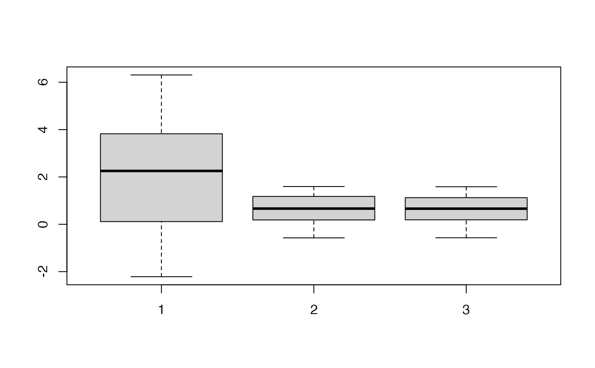
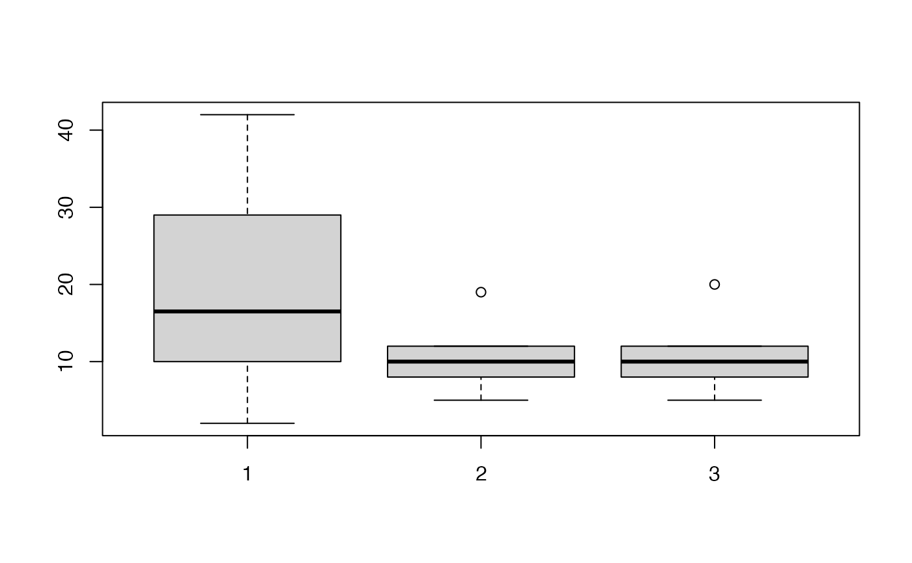

This function generates a control gene list with a distribution of expression values similar to the provided gene list.
control_list(expression_value = NULL, gene_list = NULL)A named vector containing all gene expression values and their associated gene names.
A character vector of gene names for which a control gene list made of different genes with similar distribution is to be found.
A character vector of control gene names with similar expression distribution to the input gene_list.
The function works by calculating the absolute differences between the expression values of the genes in gene_list
and those of all other genes in the expression_value vector. For each gene in the gene_list, the gene with the
smallest difference in expression value from the remaining genes is selected. This process ensures that the selected control genes
have expression values that are closely matched to the target genes, thereby maintaining a similar distribution of expression values
in the control list. Ensuring the distribution are the same (e.g histogram, boxplot...) is important as the function may fail depending on the way the
gene list is sampled from the global distribution.
# Continuous values
set.seed(1)
a <- sort(c(rnorm(100, mean=0), rnorm(100, mean=4)))
names(a) <- paste0("gene_", 1:length(a))
b <- names(a[sample(1:100, size = 10, replace = FALSE)])
control <- control_list(a, b)
#> |-- INFO : Kolmogorov-Smirnov test p-value : 0.994457554829072
boxplot(list(a, a[b], a[control]))

all(!b %in% control)
#> [1] TRUE
# Discrete values
set.seed(1)
a <- c(rpois(100, 10), rpois(100, 30))
names(a) <- paste0("gene_", 1:length(a))
b <- names(a[sample(50:130, size = 10, replace = FALSE)])
control <- control_list(a, b)
#> |-- INFO : Kolmogorov-Smirnov test p-value : 1
boxplot(list(a, a[b], a[control]))

all(!b %in% control)
#> [1] TRUE